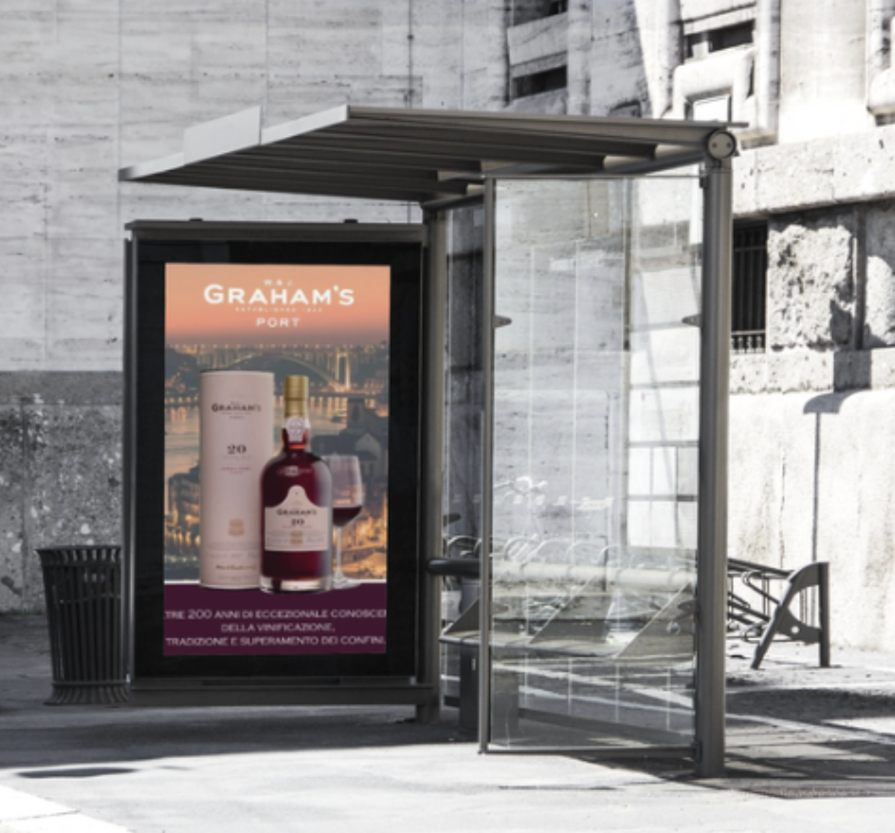
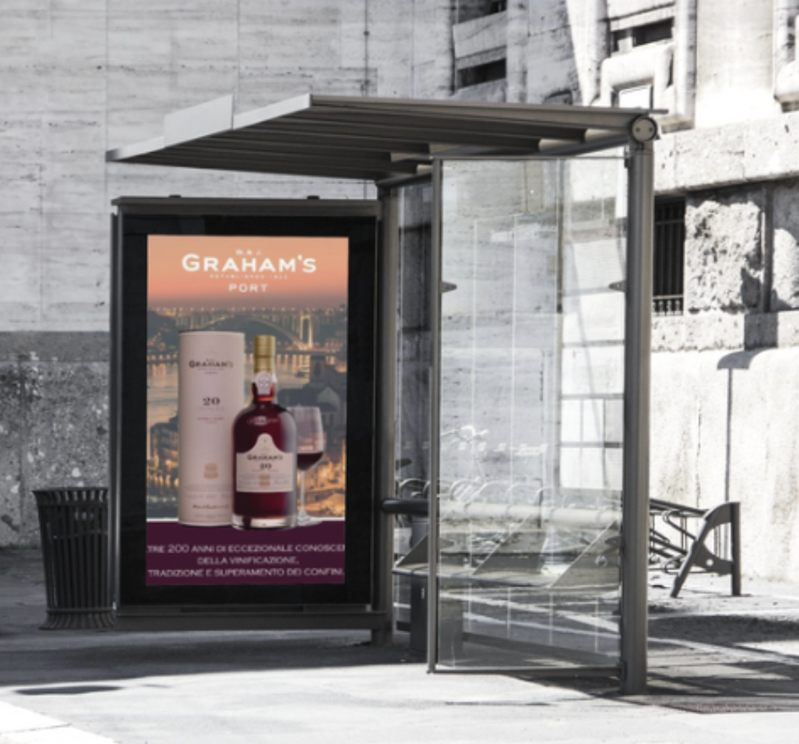
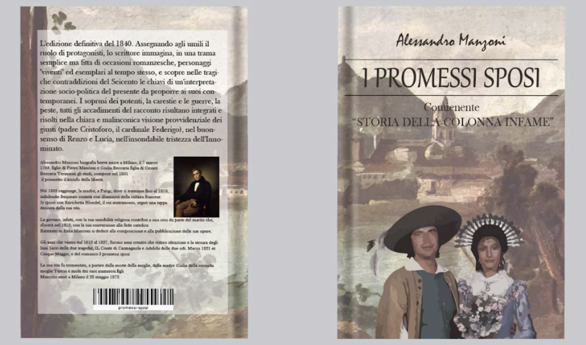
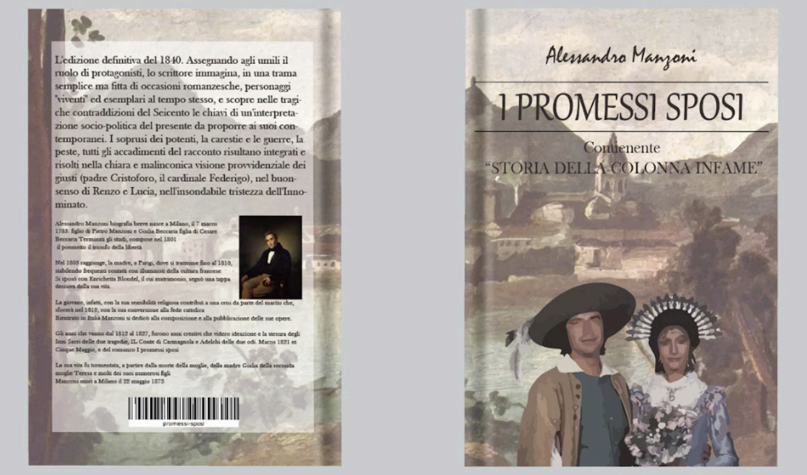
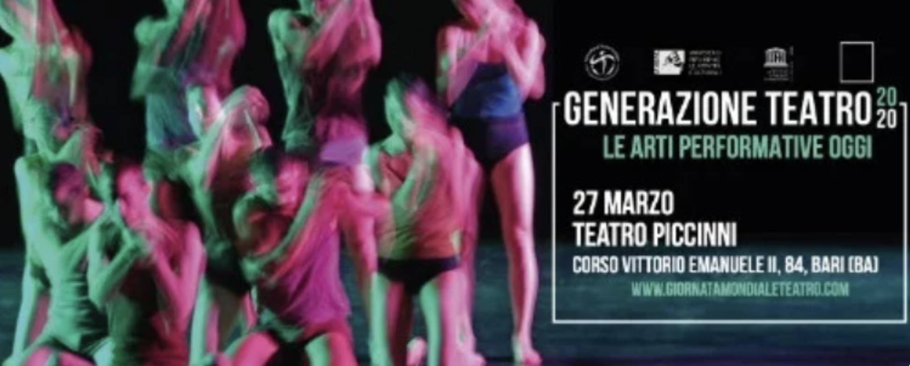
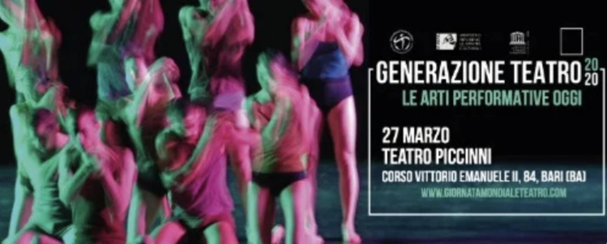

PORTFOLIO
Tommaso
Studente di grafica a SUPSI CV
Studente del primo anno di Comunicazione Visiva alla SUPSI (CH).
Mi piace esplorare il mondo del design e del multimediale.

Realizzazione di un poster pubblicitario per la mostra “Canova in Ticino” al Museo Villa Dei Cedri di Bellinzona (CH).
Realizzazione di una copertina per il megazine “CINELAND” un megazine incentrato sulle news cinematografiche con focus il collegamento tra il mondo del cinema e la città di Como
 

Realizzazione del banner pubblicitario inerente a “Generazione Teatro”, una iniziativa progettata alla conoscenza e frequentazione del teatro anche dalle nuove generazione che stanno sempre più abbandonando i teatri cittadini italiani.

Realizzazione di una locandina per la mostra “Storia del...” per la versione dello “Swiss Design” da allestire nel Museo d'arte della Svizzera italiana utilizzando i colori della bandiera svizzera e, come siluette, troviamo Max Bills
Realizzazione del manifesto pubblicitario per la mostra “La Grafica Italiana”, avente come oggetto il grafico Dudovich, nella progettazione sono state prese come riferimento l’opera “La Rinascente” e, come struttura, sono presenti le iniziali del grafico “Marcello Dudovich” che, tramite le aste, compongono il tricolore italiano
Realizzazione di una brand identity per un brand per “La Casetta di Timmi”, una comunità familiare. Il nome “Frutti della Giustizia” proviene dalla confisca delle proprietà di crimininalità organizzata dove, dopo la confisca, è sorta la struttura della comunità.

Realizzazione di una locandina per il film “Porco Rosso”, un film di Hayao Miyazaki. La richiesta richiedeva la riprogettazione del poster cinematografico dopo la visione e analisi in classe della pellicola
 

Realizzazione di una copertina per il libro celebre della letteratura italiana “I PROMESSI SPOSI”. La richiesta richiedeva la realizzazione di una copertina (fronte e retro) aggiungendo alcuni esempi di illustrazione interno alle pagine del libro.
Realizzazione di un logo utilizzando l’iniziale del nome combinata all’iniziale del cognome seguendo delle forme geometriche lineari. Le linee guida consigliavano l’uso di minimalismo seguendo la regola “Less is More”

Realizzazione di un manifesto inerente a Yogorì, una realtà di produzione di latticini, bisognava specificare la presenza di calcio nello yogurt. Progettato seguendo il flusso dello yogurt creando un’aspirale che, partendo dallo yogurt, sprigiona calcio
 

Realizzazione di un manifesto e un banner web inerente a “Generazione Teatro”, una iniziativa progettata alla conoscenza e frequentazione del teatro anche dalle nuove generazione che stanno sempre più abbandonando i teatri cittadini italiani.
Realizzazione di un poster per la sensibilizzazione della giornata mondiale dello spettro autistico. Lavoro realizzato per la campagnia di sensibilizzazione all'interno dell'istituto ISIS Paolo Carcano (Como, Italia)